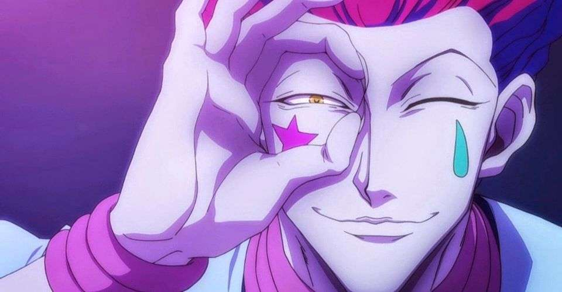
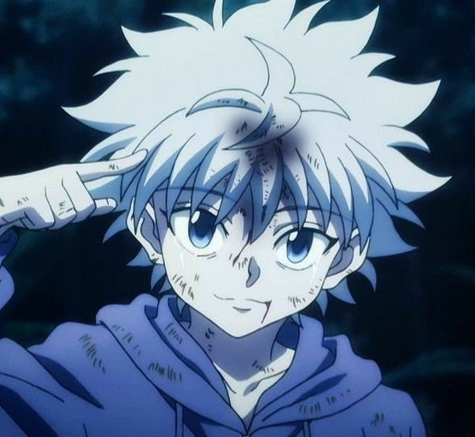
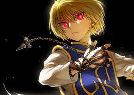
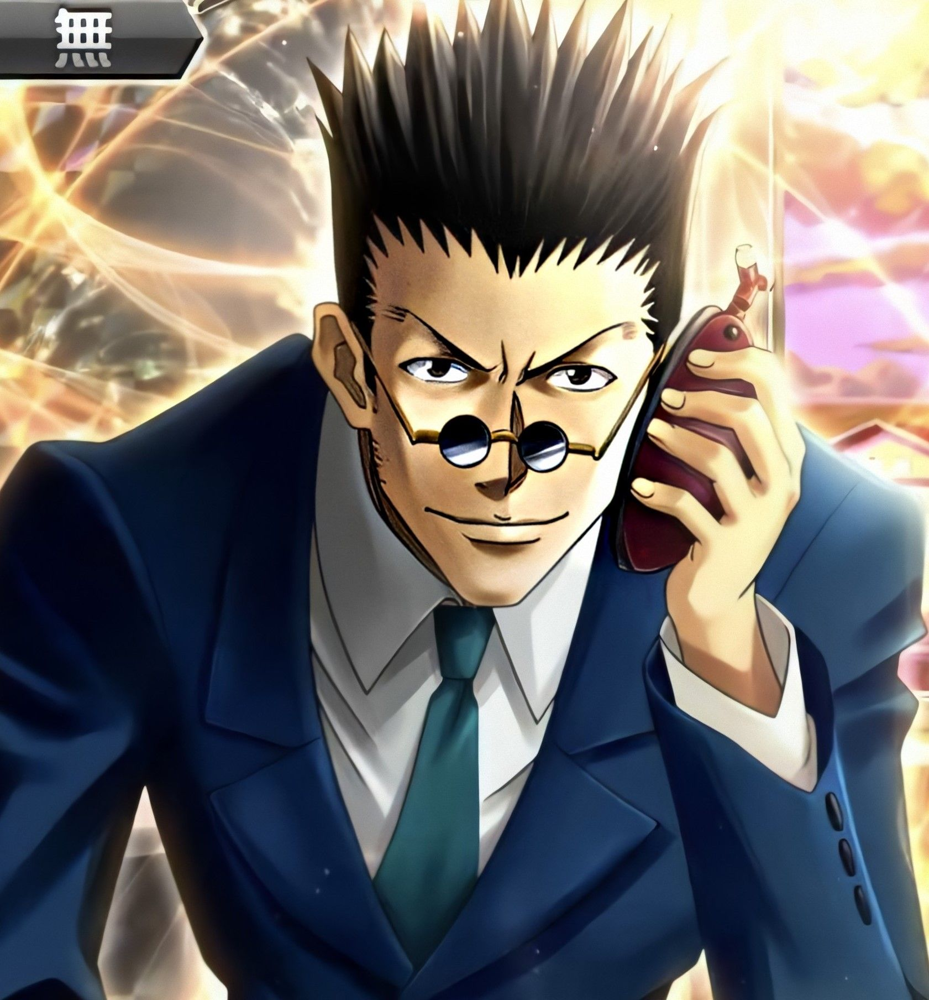
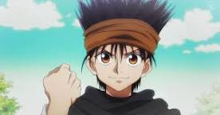
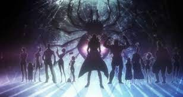

ファンサイトへようこそ
Bienvenue Hunter !
GON
Gon Freecss (ゴン=フリークス, Gon Furīkusu) est le protagoniste principal de la série Hunter × Hunter. Il est le fils du célèbre Hunter appelé Jin Freecss, et neveu adoptif de Mito. Gon a décidé de devenir un Hunter dans le but de retrouver son père, mais ne s'intéresse aucunement à sa mère.Gon est un jeune garçon avec de longs cheveux vert foncé hérissés en pointes avec des reflets vert clair et les yeux noisette. Sa tenue habituelle est composée d'une veste verte avec des bords rouge orangé couvrant un débardeur noir ou blanc.
HISOKA
Hisoka Morow (ヒ ソ カ ゠ モ ロ ウ, Hisoka Morou ) est un chasseur et ancien membre n ° 4 de la troupe fantôme ; sa force physique s'est classée au troisième rang du groupe. Il est toujours à la recherche d'adversaires puissants et épargnerait ceux qui ont un grand potentiel, tels que Gon et Killua , afin qu'ils deviennent suffisamment forts pour le défier.
KILLUA
Kirua Zoldik (キルア=ゾルディック, Kirua Zorudikku) est l'un des quatres protagonistes et le meilleur ami de Gon Freecss dans la série Hunter x Hunter. Il est le troisième enfant de la Famille Zoldik.Kirua a les cheveux hérissés argentés, la peau très claire et les yeux bleus. Ses yeux changent en fonction de son humeur : quand il passe en mode assassin, ils se rétrécissent .
Kurapika
Kurapika ( ク ラ ピ カ, Kurapika ) est l'un des quatre principaux protagonistes de la série Hunter × Hunter mais également le seul survivant du clan Kuruta. Il cherche à se venger de son passé sanglant, ses yeux brillent d'un beau et convoité rouge écarlate lorsqu'il éprouve une émotion intense. Il est le chef de l'organisation fondée par Right Nostrad, ainsi qu'un Blacklist Hunter et un membre des Zodiaques avec le nom de code "Rat".
LEOLIO
Leolio Paradinaito (レ オ リ = パ ラ デ ィ ナ イ ト, Reorio Paradinaito) est l'un des quatre personnages principaux de la série de manga Hunter × Hunter écrit et illustré par Yoshihiro Togashi. Il est un Hunter et actuellement étudiant en médecine, ainsi que l'un membre des Zodiaques avec le nom de code "Sanglier". Il fait également partie de la Division des sciences, créée en préparation pour le voyage sur le continent des ténèbres
GIN
GING FREECSS (ジン゠フリークス, JIN FURĪKUSU) EST LE PÈRE DE GON FREECSS. IL EST UN HUNTER DE RUINES DOUBLE-ÉTOILE (BIEN QU'IL PUISSE DEMANDER UNE LICENCE TRIPLE-ÉTOILE), ET UN ANCIEN ZODIAC AVEC LE NOM DE CODE "BOAR" (亥い, I). TROUVER GING ÉTAIT LA MOTIVATION DE GON POUR DEVENIR UN HUNTER.
BRIGADE PHANTOM
La Brigade fantôme ( 幻影 旅 団, Genei Ryodan ) est un groupe de renommée mondiale de voleurs qui détiennent une prime de classe A. La plupart des membres sont originaires de L'étoile filante. Le groupe se compose idéalement d'un total de treize membres, qui sont tous des utilisateurs de nen très qualifiés, mais il arrive qu'au cours de l'histoire, elle en compte moins. Chacun posséde un tatouage d'une araignée avec un numéro sur leur corps. Ceux qui souhaitent rejoindre la brigade peuvent le faire en tuant un membre actuel, en le remplaçant ainsi.